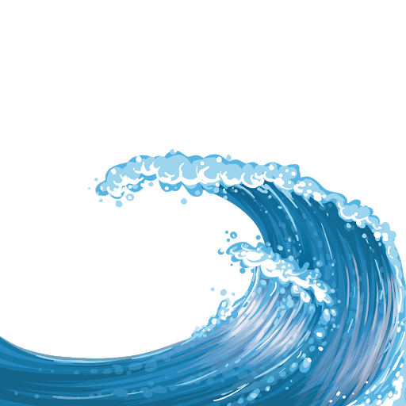

What is a fault?
Fault types - normal, reverse, strike-slip
Theory of elastic rebound - how earthquakes occur
Earthquake waves - P, S, surface waves
How to locate an earthquake - Travel time curves and three station method
Earth shaking is caused by a rapid release of energy. Due to tectonic stresses that cause rocks
to break. Energy moves outtward as seismic waves...
Earthquakes destroy buildings and kill people - 3.5 million people killed in the 20th century
Seismicity occurs due to...
- Motion along a newly formed crustal fracture (fault).
- Motion on an existing fault
- Volcanic eruptions
- Massive landslides
- Meteorite impacts
"Most Earthquakes occur along faults"
- The amount of movement that an earthquake has is known as displacement.
- The point on the fault where the earthquake begins is called the focus.
- The point on the surface directly above the focus is called the epicenter.
- The fault plane is the surface of the fault where motion occurs.
Faults are like planar breaks in blocks of crust. Most faults slope, although some are vertical.
Fault type is based on relative block motions.
A reverse fault is a hanging wall that goes up relative to the footwall.
A normal fault is a hanging wall that goes down relative to the footwall.
Thrust fault - special kind of reverse fault
- Fault dips less than 45 degrees
- Associated with compressional forces
Strike-slip fault
- Motion is horizontal
- Associated with shear forces
Oblique-slip fault
- Motion is both horizontal and vertical
Faults are commonplace within the crust.
Active faults - ongoing struss produce motion.
Inactive faults - no motion for a long time.
Displacement - amount of movement that occurs along a fault.
Fault trace - surface expression of a fault.
Fault scarp - small step on the ground surface where one side of a fault has moved vertically with respect to the other.
Fault creep - slow, gradual displacement.
Tectonic forces add stress to unbroken rocks.
The rock deforms slightly (elastic strain).
Continued stress will cause growth of cracks.
Eventually, the rock will break (rupture).
The rock will snap back to its original shape (elastic rebound).
When the rock breaks, elastic strain transformes into brittle
deformation and seismic waves.
When rocks break, elatic strain is released. This energy radiates
outwards from the hypocenter as waves, generating vibrations. Foreshock
and aftershocks are common.
Body waves - travel through the interior of the Earth.
- P waves - compressional or primary waves.
> Push-Pull motion
> Travel through solids, liquids, and gases
> Fastest seismic waves
- S waves - shear or secondary waves.
> Shake motion
> Travel only through solids
> Slower than P waves
Surface waves - travel along the Earth's surface.
- Love waves (L-waves) - side to side motion
- Rayleigh waves (R-waves) - rolling motion
Pass through the Earth's interior.
- P-waves
- S-waves
Surface waves travel along the Earth's surface.
- Love waves (L-waves)
- Rayleigh waves (R-waves)
Seismographs record seismic waves.
- Seismograms are the records of seismic waves.
- Seismograms are used to determine the location of an earthquake.
- Seismograms are used to determine the size of an earthquake.
Waves always arrive in sequence, P-waves 1st, S-waves 2nd, Surface waves last.
magnitude - measure of the amount of energy released.
intensity - measure of the amount of ground shaking.
Earthquakes are linked to plate tectonics. Shallow earthquakes occur at divergent and transform plate boundaries.
Intermediate and deep earthquakes occur at convergent plate boundaries.
Shallow - 0-20km occur alon the mid-ocean ridge, transform boundaries, shallow part of trenches, and continental crust.
Intermediate - Deep occur in the Wadati-Benioff zone. Intermediate 20 to 300km
Deep 300 to 700km.
- Continental transform faults (San, Andreas, Alpine)
- Continental rifts (Basin and Range, East African Rift)
- Continental collisions (Himalayas, Alps)
- Intraplate earthquakes (ancient crustal weakness)
The san Andreas fault meets the North American plate. It is a very active
strike-slip fault. Hundreds of Earthquakes a year.
Intraplate earthquakes occur within a plate. They are not well understood.
Ground shaking and displacement . P-waves are the first to arrive, and they move
rapidly up and down. S-waves are the second to arrive, and they move side to side.
The s waves are stronger and can cause extensive damage. Surface waves lag behind, and
writhes like a snake. R waves are the last to arrive. The land surface ripples ripples
in a pond.
Tsunami's are large ocean waves generated by earthquakes or volcanic eruptions.
Tsunami's are not tidal waves.
Tsunami's are not caused by storms.
Tsunami's are not surfable waves.
Tsunami's are generated by vertical displacement of the seafloor. They travel at high speeds
across the ocean. They are almost inperceptible in the open ocean. - low wave height, long wavelength.
As water shallows they grow in height. They reach 10-15m or more.
Long term warning systems are in place. They work by detecting earthquakes and measuring sea level changes.

A tsunami is a series of ocean waves with very long wavelengths (typically several hundred kilometers) and long periods (typically 10 to 60 minutes) that can cause widespread destruction when they hit coastlines. Tsunamis are typically generated by undersea earthquakes, volcanic eruptions, landslides, or meteorite impacts that displace large volumes of water. When a tsunami is generated, the initial wave may be only a few centimeters high, but as it travels across the ocean, its energy is dispersed over a wider area, causing the wave to increase in height. In deep water, tsunamis can travel at speeds of up to 800 km/h (500 mph), but their height is usually less than one meter. As the tsunami approaches shallow water near the coast, however, its speed decreases and its height increases dramatically. The height of a tsunami wave can be tens of meters or more, depending on the size and strength of the tsunami. The impact of a tsunami on a coastline can be devastating, with the potential to cause widespread destruction and loss of life. The first wave of a tsunami is often not the largest, and subsequent waves may be even more powerful, making it difficult for people to evacuate in time. Tsunamis can cause extensive flooding, damage to buildings and infrastructure, and erosion of beaches and shorelines. They can also cause secondary hazards such as fires, landslides, and contaminated water supplies. To mitigate the impact of tsunamis, warning systems have been established in many coastal regions to provide advance notice of potential tsunamis. These warning systems use data from seismic sensors, ocean buoys, and other sources to detect earthquakes and other events that could generate tsunamis, and provide alerts to coastal communities to evacuate or take other protective measures. Coastal communities may also have tsunami evacuation routes and emergency shelters in place to help people evacuate quickly and safely. In summary, a tsunami is a powerful ocean wave that can cause widespread destruction when it hits a coastline. The potential impact of a tsunami on coastal communities underscores the importance of preparedness and effective warning systems to help mitigate the effects of these devastating events.
1. Compare normal, reverse, and strike-slip faults.
Normal faults occur when the hanging wall drops down relative to the footwall. Reverse faults occur when the hanging wall is pushed up relative to the footwall. Strike-slip faults occur when the two sides of the fault move horizontally past each other.
2. Describe elastic rebound theory and the concept of stick-slip behavior.
Elastic rebound theory explains how energy is released during an earthquake as two plates stick together, causing strain to build up in the rocks until they reach their breaking point and snap, releasing energy. Stick-slip behavior refers to the process of the plates sticking together and then slipping suddenly, causing an earthquake.
3. Describe the motions of the four types of seismic waves. Which are body waves, and which are surface waves?
P-waves and S-waves are body waves that travel through the earth's interior, while Rayleigh and Love waves are surface waves that move along the surface. P-waves are compressional waves, S-waves are shear waves, Rayleigh waves move in a rolling motion, and Love waves move side to side.
4. On the seismogram of an earthquake recorded at a seismic station in Paris, the S- wave arrives 6 minutes after the P-wave. On the seismogram obtained by a station in Mumbai for the same earthquake, the difference between the P-wave and S-wave arrival times is 4 minutes. Which station is closer to the epicenter? From the information provided, can you pinpoint the location of the epicenter? Explain.
The station in Mumbai is closer to the epicenter because the time difference between the P-wave and S-wave is less. However, without more data from additional seismic stations, it is not possible to pinpoint the exact location of the epicenter.
5. Explain the contrasts among the different scales used to describe the size of an earthquake.
Different scales used to describe the size of an earthquake include the Richter scale, moment magnitude scale, and Mercalli intensity scale. The Richter scale measures the amplitude of the largest seismic wave, while the moment magnitude scale measures the total energy released by an earthquake. The Mercalli intensity scale measures the effects of an earthquake on people, buildings, and the environment.
6. How does seismicity on mid-ocean ridges compare with seismicity at convergent or transform boundaries? Do all earthquakes occur at plate boundaries?
Seismicity on mid-ocean ridges is generally lower than seismicity at convergent or transform boundaries. However, not all earthquakes occur at plate boundaries, as earthquakes can also occur within plates.
7. Is seismic risk greater in a town on the west coast of South America than on the east coast? Explain your answer
Seismic risk is generally greater on the west coast of South America than on the east coast, as the west coast is located along a subduction zone where large earthquakes are common.
8. What is a tsunami, and why does it form?
A tsunami is a large ocean wave caused by an earthquake, volcanic eruption, or landslide. It forms when a large amount of water is displaced suddenly, creating a wave that can travel across entire ocean basins.
9. Explain how liquefaction occurs in an earthquake, and how it can cause damage.
Liquefaction occurs when water-saturated soil loses its strength and stiffness during an earthquake, causing it to behave like a liquid. This can cause damage to buildings and other structures built on top of the soil.
10. How are long-term and short-term earthquake predictions made? What is the basis for determining a recurrence interval, and what does a recurrence interval mean?
Short-term earthquake predictions are made based on changes in seismic activity and other factors that suggest an earthquake may be imminent. Long-term earthquake predictions are made by estimating the likelihood of earthquakes based on historical patterns of seismic activity. Recurrence intervals are based on the average time between earthquakes of a certain size, and can help estimate the likelihood of future earthquakes in a particular area.